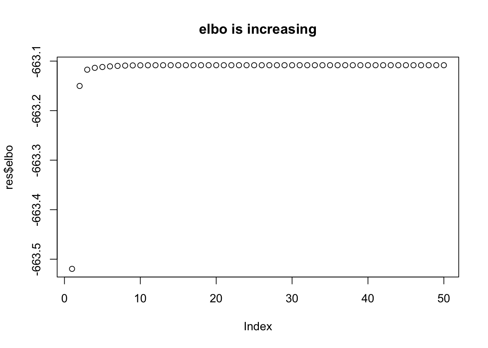

Last updated: 2017-11-18
Code version: 4125d0a
Here I derive the variational updates based on standard Bayesian computations for the single-SNP model. I also implement a version that has clearer connections with that model and show it gives the same results as the original.
Consider the single-SNP (“one eQTL per gene”) regression model. That is the model \[Y = Xb + E\] where \(X\) is \(n \times p\) and \(b\) is \(p \times 1\) and the prior on \(b\) is that exactly one element of \(b\) is nonzero, with \[b_j \sim (1-\pi_j) \delta_0 + \pi_j N(0,\sigma_b^2).\]
Let \(F_1(q)\) denote the VB lower bound for this model, where \(q\) is a variational distribution on \(b\). Then:
\[F_1(q; X,Y) = E_q[-||Y-Xb||^2/(2\sigma^2)] + E_q[\log p(b)/q(b)] + \text{const}\] We know that the posterior distribution for \(b\) is easily computed, and that it maximizes the lower-bound \(F_1(q)\) over all possible \(q\). Let \(p_\text{post}\) denote this posterior. That is
\[p_\text{post} = \arg \max F_1(q).\]
Note that we can write \(F_1\) as follows: \[F_1(q; X,Y) = -1/(2\sigma^2) E_q[Y'Y + b'X'Xb -2Y'Xb] + E_q[\log p(b)/q(b)] + \text{const}\]
\[F_1(q; X,Y) = -1/(2\sigma^2) E_q[b'X'Xb -2Y'Xb] + E_q[\log p(b)/q(b)] + \text{const}\] where the constant does not depend on \(q\).
Now consider the two-SNP model \[Y = Xb_1 + Xb_2 + E.\]
Let \(q(b_1,b_2) = q_1(b_1)q_2(b_2)\) be the variational approximation to the posterior on \(b_1,b_2\).
The variational lower bound is \[F_2(q_1,q_2; X,Y) = E_{q_1,q_2}[-||Y-Xb_1 - Xb_2||^2/(2\sigma^2)] + E_{q_1}[\log p(b_1)/ q_1(b_1)] + E_{q_2}[\log p(b_2)/ q_2(b_2)] + \text{const}\]
Now consider maximizing \(F_2\) over \(q_2\) only, treating \(q_1\) as fixed. That is we must maximize: \[F_2(q_2; X,Y) = E_{q_1,q_2}[-||Y-Xb_1 - Xb_2||^2/(2\sigma^2)] + E_{q_2}[\log p(b_2)/ q_2(b_2)] + \text{const}\] which we can write \[F_2(q_2;X,Y) = -1/(2\sigma^2) E_{q_1,q_2}[(Y-Xb_1)'(Y-Xb_1) + b_2'X'Xb_2 -2(Y-Xb_1)'Xb_2] + E_{q_2}[\log p(b_2)/ q_2(b_2)] + \text{const}\] which, again absorbing some terms that do not depend on \(q_2\) into the constant: \[F_2(q_2; X,Y) = -1/(2\sigma^2) E_{q_2}[b_2'X'Xb_2 -2(Y-X\bar{b}_1)'Xb_2] + E_{q_2}[\log p(b_2)/ q_2(b_2)] + \text{const}\] where \(\bar{b}_1\) denotes \(E_{q_1}(b_1)\).
Thus we can write \(F_2\) as a function of the single SNP problem \(F_1\), but with \(Y\) replaced with the residualized version \(Y-X\bar{b}_1\): \[F_2(q_2; X,Y) = F_1(q; X, Y-X\bar{b}_1) + \text{const}\] In other words we can optimize \(F_2\) over \(q_2\), with \(q_1\) fixed, by applying single-SNP Bayesian computations to the residualized \(Y\)s.
Similarly we can optimize \(F_2\) over \(q_1\) with \(q_2\) fixed the same way.
And the same idea extends to arbitrary numbers of SNPs.
Here we code up the idea directly in terms of single-SNP computations, just to make it clear.
knitr::read_chunk("newVB.funcs.R")new_varbvsnormupdate <- function (X, sigma, sa, xy, d, alpha0, mu0, Xr0) {
# Get the number of samples (n) and variables (p).
n <- nrow(X)
p <- ncol(X)
L = nrow(alpha0) # alpha0 and mu0 must be L by p
pi = rep(1,p)
# Check input X.
if (!is.double(X) || !is.matrix(X))
stop("Input X must be a double-precision matrix")
# Check inputs sigma and sa.
if (length(sigma) != 1 | length(sa) != 1)
stop("Inputs sigma and sa must be scalars")
# Check input Xr0.
if (length(Xr0) != n)
stop("length(Xr0) must be equal to nrow(X)")
# Initialize storage for the results.
alpha <- alpha0
mu <- mu0
Xr <- Xr0
# Repeat for each effect to update
for (l in 1:L) {
# remove lth effect
Xr = Xr - X %*% (alpha[l,]*mu[l,])
# Compute the variational estimate of the posterior variance.
s <- sa*sigma/(sa*d + 1)
# Update the variational estimate of the posterior mean.
mu[l,] <- s/sigma * (xy - t(X) %*% Xr)
# Update the variational estimate of the posterior inclusion
# probability. This is basically prior (pi) times BF.
# The BF here comes from the normal approx - could be interesting
# to replace it with a t version that integrates over sigma?
alpha[l,] <- pi*exp((log(s/(sa*sigma)) + mu[l,]^2/s)/2)
alpha[l,] <- alpha[l,]/sum(alpha[l,])
# Update Xr by adding back in the $l$th effect
Xr <- Xr + X %*% (alpha[l,]*mu[l,])
}
return(list(alpha = alpha,mu = mu,Xr = Xr,s=s))
}
# Just repeated applies those updates
# X is an n by p matrix of genotypes
# Y a n vector of phenotypes
# sa the variance of the prior on effect sizes (actually $\beta \sim N(0,sa sigma)$ where the residual variance sigma here is fixed to the variance of Y based on a small effect assumption.)
fit = function(X,Y,sa=1,sigma=NULL,niter=100,L=5,calc_elbo=FALSE){
if(is.null(sigma)){
sigma=var(Y)
}
p =ncol(X)
xy = t(X) %*% Y
d = colSums(X * X)
alpha0= mu0 = matrix(0,nrow=L,ncol=p)
Xr0 = X %*% colSums(alpha0*mu0)
elbo = rep(NA,niter)
for(i in 1:niter){
res = new_varbvsnormupdate(X, sigma, sa, xy, d, alpha0, mu0, Xr0)
alpha0 = res$alpha
mu0 = res$mu
Xr0 = res$Xr
if(calc_elbo){
elbo[i] = elbo(X,Y,sigma,sa,mu0,alpha0)
}
}
return(c(res,list(elbo=elbo)))
}
#this is for scaled prior in which effect prior variance is sa * sigma
elbo = function(X,Y,sigma,sa,mu,alpha){
L = nrow(alpha)
n = nrow(X)
p = ncol(X)
Xr = (alpha*mu) %*% t(X)
Xrsum = colSums(Xr)
d = colSums(X*X)
s <- sa*sigma/(sa*d + 1)
postb2 = alpha * t(t(mu^2) + s)
Eloglik = -(n/2) * log(2*pi* sigma) -
(1/(2*sigma)) * sum(Y^2) +
(1/sigma) * sum(Y * Xrsum) -
(1/(2*sigma)) * sum(Xrsum^2) +
(1/(2*sigma)) * sum((Xr^2)) -
(1/(2*sigma)) * sum(d*t(postb2))
KL1 = sum(alpha * log(alpha/(1/p)))
KL2 = - 0.5* sum(t(alpha) * (1 + log(s)-log(sigma*sa)))
+ 0.5 * sum(postb2)/(sigma*sa)
return(Eloglik - KL1 - KL2)
}
# This computes the average lfsr across SNPs for each l, weighted by the
# posterior inclusion probability alpha
lfsr_fromfit = function(res){
pos_prob = pnorm(0,mean=t(res$mu),sd=sqrt(res$s))
neg_prob = 1-pos_prob
1-rowSums(res$alpha*t(pmax(pos_prob,neg_prob)))
}
#find how many variables in the 95% CI
# x is a probability vector
n_in_CI_x = function(x){
sum(cumsum(sort(x,decreasing = TRUE))<0.95)+1
}
# return binary vector indicating if each point is in CI
# x is a probability vector
in_CI_x = function(x){
n = n_in_CI_x(x)
o = order(x,decreasing=TRUE)
result = rep(0,length(x))
result[o[1:n]] = 1
return(result)
}
# Return binary matrix indicating which variables are in CI of each
# of effect
in_CI = function(res){
t(apply(res$alpha,1,in_CI_x))
}
n_in_CI = function(res){
apply(res$alpha,1,n_in_CI_x)
}
# computes z score for association between each
# column of X and y
calc_z = function(X,y){
z = rep(0,ncol(X))
for(i in 1:ncol(X)){
z[i] = summary(lm(y ~ X[,i]))$coeff[2,3]
}
return(z)
}
# plot p values of data and color in the 95% CIs
# for simulated data, specify b = true effects (highlights in red)
pplot = function(X,y,res,pos=NULL,b=NULL,CImax = 400,...){
z = calc_z(X,y)
zneg = -abs(z)
logp = log10(pnorm(zneg))
if(is.null(b)){b = rep(0,ncol(X))}
if(is.null(pos)){pos = 1:ncol(X)}
plot(pos,-logp,col="grey",xlab="",ylab="-log10(p)",...)
points(pos[b!=0],-logp[b!=0],col=2,pch=16)
for(i in 1:nrow(res$alpha)){
if(n_in_CI(res)[i]<CImax)
points(pos[which(in_CI(res)[i,]>0)],-logp[which(in_CI(res)[i,]>0)],col=i+2)
}
}# single snp bayes regression of Y on each column of X
# Y is n vector
# X is n by p
# prior variane on beta is sa2 * s2 (ie sa2 scaled by residual variance)
# s2 is sigma^2 (residual variance)
single_snp = function(Y,X,sa2=1,s2=1){
d = colSums(X^2)
sa2 = s2*sa2 # scale by residual variance
betahat = (1/d) * t(X) %*% Y
shat2 = s2/d
alpha = dnorm(betahat,0,sqrt(sa2+shat2))/dnorm(betahat,0,sqrt(shat2)) #bf on each SNP
alpha = alpha/sum(alpha) # posterior prob on each SNP
spost2 = (1/sa2 + d/s2)^(-1) # posterior variance
mupost = (d/s2)*spost2*betahat
return(list(alpha=alpha,mu=mupost,s2=spost2))
}
new_vbupdate <- function (X, sigma, sa, Y, d, alpha0, mu0, Xr0) {
# Get the number of samples (n) and variables (p).
n <- nrow(X)
p <- ncol(X)
L = nrow(alpha0) # alpha0 and mu0 must be L by p
pi = rep(1,p)
# Check input X.
if (!is.double(X) || !is.matrix(X))
stop("Input X must be a double-precision matrix")
# Check inputs sigma and sa.
if (length(sigma) != 1 | length(sa) != 1)
stop("Inputs sigma and sa must be scalars")
# Check input Xr0.
if (length(Xr0) != n)
stop("length(Xr0) must be equal to nrow(X)")
# Initialize storage for the results.
alpha <- alpha0
mu <- mu0
Xr <- Xr0
# Repeat for each effect to update
for (l in 1:L) {
# remove lth effect
Xr = Xr - X %*% (alpha[l,]*mu[l,])
R = Y - Xr
res = single_snp(R,X,sa,sigma)
# Compute the variational estimate of the posterior variance.
s <- res$s2
# Update the variational estimate of the posterior mean.
mu[l,] <- res$mu
# Update the variational estimate of the posterior inclusion
# probability. This is basically prior (pi) times BF.
# The BF here comes from the normal approx - could be interesting
# to replace it with a t version that integrates over sigma?
alpha[l,] <- res$alpha
Xr <- Xr + X %*% (alpha[l,]*mu[l,])
}
return(list(alpha = alpha,mu = mu,Xr = Xr,s=s))
}
fit2 = function(X,Y,sa=1,sigma=NULL,niter=100,L=5,calc_elbo=FALSE){
if(is.null(sigma)){
sigma=var(Y)
}
p =ncol(X)
xy = t(X) %*% Y
d = colSums(X * X)
alpha0= mu0 = matrix(0,nrow=L,ncol=p)
Xr0 = X %*% colSums(alpha0*mu0)
elbo = rep(NA,niter)
for(i in 1:niter){
res = new_vbupdate(X, sigma, sa, Y, d, alpha0, mu0, Xr0)
alpha0 = res$alpha
mu0 = res$mu
Xr0 = res$Xr
if(calc_elbo){
elbo[i] = elbo(X,Y,sigma,sa,mu0,alpha0)
}
}
return(c(res,list(elbo=elbo)))
}set.seed(1)
n = 1000
p = 1000
beta = rep(0,p)
beta[1] = 1
beta[2] = 1
beta[3] = 1
beta[4] = 1
X = matrix(rnorm(n*p),nrow=n,ncol=p)
y = X %*% beta + rnorm(n)
#X = scale(X,center = TRUE,scale=FALSE)
#y = y-mean(y)
res =fit(X,y,niter=10,calc_elbo=TRUE)
res2 =fit2(X,y,niter=10,calc_elbo = TRUE)
all.equal(res$elbo,res2$elbo)[1] TRUEy = read.table("../data/finemap_data/fmo2.sim/ysim.txt")
X = read.table("../data/finemap_data/fmo2.sim/Xresid.txt")
X = as.matrix(X)
y = as.matrix(y)
res =fit(X,y,niter=50,calc_elbo=TRUE)
res2 =fit(X,y,niter=50,calc_elbo=TRUE)
all.equal(res$elbo,res2$elbo)[1] TRUEres =fit(X,y,sigma=1.2,sa=0.5,niter=50,calc_elbo=TRUE)
res2 =fit(X,y,sigma=1.2,sa=0.5,niter=50,calc_elbo=TRUE)
all.equal(res$elbo,res2$elbo)[1] TRUEplot(res$elbo,main="elbo is increasing")
sessionInfo()R version 3.3.2 (2016-10-31)
Platform: x86_64-apple-darwin13.4.0 (64-bit)
Running under: OS X El Capitan 10.11.6
locale:
[1] en_US.UTF-8/en_US.UTF-8/en_US.UTF-8/C/en_US.UTF-8/en_US.UTF-8
attached base packages:
[1] stats graphics grDevices utils datasets methods base
loaded via a namespace (and not attached):
[1] backports_1.1.1 magrittr_1.5 rprojroot_1.2 tools_3.3.2
[5] htmltools_0.3.6 yaml_2.1.14 Rcpp_0.12.13 stringi_1.1.5
[9] rmarkdown_1.7 knitr_1.17 git2r_0.19.0 stringr_1.2.0
[13] digest_0.6.12 evaluate_0.10.1This R Markdown site was created with workflowr